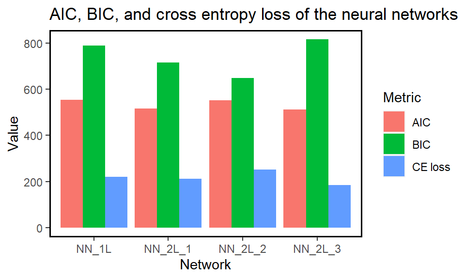

3 Exercise 2: German data
This exercise extends Examples 6-8 in lecture note.
Task
- Fit multiple neural networks with
Account_balance,Purpose,Length_of_cur_employmentandCredit_Amountas predictors in your model.
Remember to pre-process the data for both categorical variables and continuous variables before fitting the neural network. The categorical variables should be transformed into dummy variables using one-hot encoding and the continuous variables should be scaled using either standardisation or min-max normalisation.
- Compare the cross-entropy loss, Akaike Information Criterion (AIC) and Bayesian Information Criterion (BIC) of different models, and select the optimal model.
To get AIC and BIC, set the argument likelihood=TRUE in neuralnet.
- For the optimal model you selected in part (2), report its test performance.
load("German.RData")
train <- German_train
# Data pre-processing
min_max_scale <- function(x){
(x - min(x)) / (max(x) - min(x))
}
train$Credit_amount <- min_max_scale(train$Credit_amount)
credit_card_matrix <- model.matrix(~Account_balance+Purpose+Length_of_cur_employment
+Credit_amount, data=train)
credit_card_matrix_final <- credit_card_matrix[,-1]Next we fit a few neural networks with different width (i.e. the number of hidden nodes) and depth (i.e. the number of hidden layers).
train$Creditability <- as.integer(train$Creditability)-1
predictor_list <- paste(colnames(credit_card_matrix_final),collapse="+")
f <- paste(c("train$Creditability~",predictor_list),collapse="")
set.seed(84)
nn_credit_one_layer <- neuralnet(f,data=credit_card_matrix_final,hidden=c(5),
linear.output = FALSE,err.fct = 'ce',
likelihood=TRUE, threshold = 0.1)
nn_credit_two_layers_1 <- neuralnet(f,data=credit_card_matrix_final,
hidden=c(4,1),
linear.output = FALSE,err.fct = 'ce',
likelihood=TRUE, threshold = 0.1)
nn_credit_two_layers_2 <- neuralnet(f,data=credit_card_matrix_final,
hidden=c(1,4),
linear.output = FALSE,err.fct = 'ce',
likelihood=TRUE, threshold = 0.1)
nn_credit_two_layers_3 <- neuralnet(f,data=credit_card_matrix_final,
hidden=c(5,3),
linear.output = FALSE,err.fct = 'ce',
likelihood=TRUE, threshold = 0.1)Now we produce a bar plot comparing all built models.
library(ggplot2); library(dplyr)
Class_NN_ICs <- tibble('Network' = rep(c("NN_1L","NN_2L_1", "NN_2L_2",
"NN_2L_3"), each = 3),
'Metric' = rep(c('AIC', 'BIC','CE loss'), length.out=12),
'Value' = c(nn_credit_one_layer$result.matrix[4,1],
nn_credit_one_layer$result.matrix[5,1],
nn_credit_one_layer$result.matrix[1,1],
nn_credit_two_layers_1$result.matrix[4,1],
nn_credit_two_layers_1$result.matrix[5,1],
nn_credit_two_layers_1$result.matrix[1,1],
nn_credit_two_layers_2$result.matrix[4,1],
nn_credit_two_layers_2$result.matrix[5,1],
nn_credit_two_layers_2$result.matrix[1,1],
nn_credit_two_layers_3$result.matrix[4,1],
nn_credit_two_layers_3$result.matrix[5,1],
nn_credit_two_layers_3$result.matrix[1,1]))
nn_ggplot <- Class_NN_ICs %>%
ggplot(aes(Network, Value, fill=Metric)) +
geom_col(position = 'dodge') +
ggtitle("AIC, BIC, and cross entropy loss of the neural networks")
nn_ggplot
First recall that a smaller value of AIC and BIC indicates a better model.
In terms of AIC the fourth neural network with 2 hidden layer and 5 and 3 nodes in each layer seemed to be best, while BIC preferred the second neural network with 2 hidden layers and 4 and 1 nodes in each layer. The cross entropy loss agreed with AIC so we would probably choose the fourth neural network. This is an example of one of the many times where information criteria give different answer since they penalise complexity in different ways.
We can also double check the previous comments, and find out which neural network is the one with the smallest value for the cross-entropy loss function, by using the which.min command.
which.min(c(nn_credit_one_layer$result.matrix[4,1],
nn_credit_two_layers_1$result.matrix[4,1],
nn_credit_two_layers_2$result.matrix[4,1],
nn_credit_two_layers_3$result.matrix[4,1]))## aic
## 4which.min(c(nn_credit_one_layer$result.matrix[5,1],
nn_credit_two_layers_1$result.matrix[5,1],
nn_credit_two_layers_2$result.matrix[5,1],
nn_credit_two_layers_3$result.matrix[5,1]))## bic
## 3which.min(c(nn_credit_one_layer$result.matrix[1,1],
nn_credit_two_layers_1$result.matrix[1,1],
nn_credit_two_layers_2$result.matrix[1,1],
nn_credit_two_layers_3$result.matrix[1,1]))## error
## 4To predict on the test data, we need to first clean the data as for the training data.
# Data pre-processing
test <- German_test
test$Credit_amount <- min_max_scale(test$Credit_amount)
test$Creditability <- as.integer(test$Creditability)-1
test_credit_card_matrix <- model.matrix(~Account_balance+Purpose+Length_of_cur_employment
+Credit_amount, data=test)
test_credit_card_matrix_final <- test_credit_card_matrix[,-1]
# Prediction
test_pred <- predict(nn_credit_two_layers_3,test_credit_card_matrix_final)
table(test$Creditability,test_pred>0.5)##
## FALSE TRUE
## 0 60 97
## 1 78 265